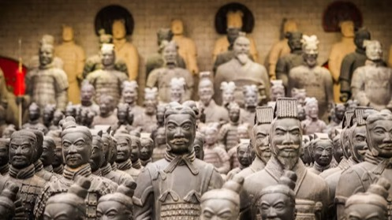
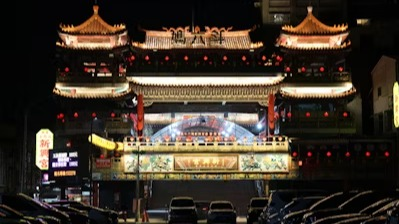
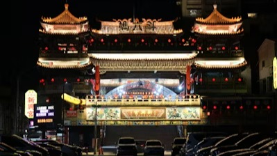

-
Welcome to China
People's Republic of China 中华人民共和国 (Chinese) Zhōnghuá Rénmín Gònghéguó (Pinyin)
Welcome to China — a country where 5,000 years of history come alive in every step you take. From the ancient Silk Road to the dynamic streets of Beijing and Shanghai, China is a land of timeless beauty and modern marvels. Whether you're drawn to the serenity of traditional temples, the grandeur of imperial palaces, or the rapid pace of innovation, China offers something for every explorer. Marvel at natural wonders like the dramatic peaks of Zhangjiajie, the karst mountains of Guilin, and the desert landscapes of Dunhuang. Dive into the rich tapestry of Chinese culture through its festivals, art, music, and world-famous cuisine. Savor the flavors of dim sum in Guangdong, spicy hot pot in Sichuan, and hand-pulled noodles in Lanzhou. China invites you to experience its diversity into a harmonious blend of past and future, tradition and transformation. Whether you're here for adventure, history, business, or inspiration, you will find a journey unlike any other.
-
Unveil the soul of China through its most iconic and awe-inspiring landmarks. Stand atop the legendary Great Wall of China, an architectural marvel that winds across mountains and valleys, echoing centuries of resilience and grandeur. In the heart of modern China, marvel at the dazzling Shanghai skyline, where futuristic towers like the Shanghai Tower and the Oriental Pearl rise above the clouds, blending high-tech innovation with cosmopolitan charm. Step into the ancient world at the Forbidden City in Beijing — a vast, majestic palace complex that once housed emperors and is now a gateway into China’s imperial past. Travel to Xi’an to encounter the mysterious and monumental Terracotta Army, thousands of life-sized warriors silently guarding the tomb of China’s first emperor — a UNESCO World Heritage Site and archaeological wonder. Lose yourself in the surreal beauty of Zhangjiajie National Forest Park, where towering sandstone pillars pierce the sky, creating a mystical landscape that inspired the floating mountains in the film Avatar. And no exploration of China is complete without the soul-stirring artistry of Chinese opera — a mesmerizing fusion of colorful costumes, powerful vocals, acrobatics, and storytelling that preserves the essence of Chinese tradition and spirit.
-

 
 -
"Experience China: A Land of Heritage,
Culture, and Progress"
Why Visit China?
- • Unique blend of ancient and modern
- • Warm hospitality and cultural depth
- • UNESCO World Heritage Sites
- • World-class transportation and infrastructure